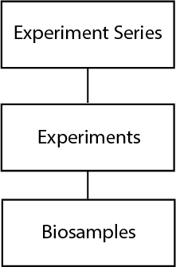
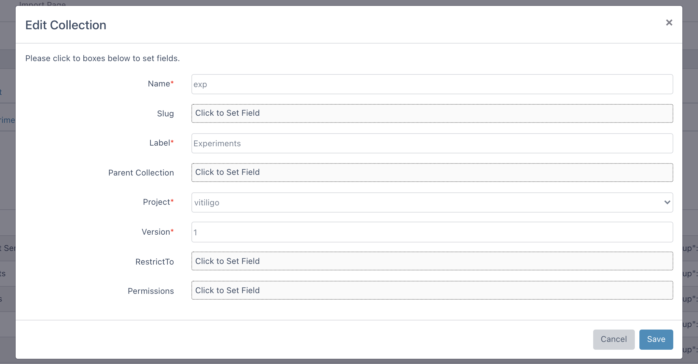

Collection Guide¶
This guide will show how to create, edit, and delete collections.
Collections are tables to keep all of your data. Dmeta allows you to create parent-child relationships between collections using referencing techniques. Here we will go through basic of the collections.
At the top, there are three action buttons to manage collections: insert, edit and delete.
Insert Collections¶
In order to insert a new collections, you need to click on the insert button which will open new form as shown below. Here you can enter following fields:
- Name (required): Collection name is entered in this field.
- Slug: Short version of the collection name is entered for API requests.
- Label (required): Long version of the collection name is entered in this field.
- Parent Collection: Collection to be used for parent referencing.
Consider the following hierarchy of collections:
{kind=link}
In this example, Experiment Series is the parent collection of the Experiments collection. Therefore each experiment data will have a reference for Experiment Series. Similarly, each data in Biosamples will have a reference for Experiments collection. In order to achive this hierarchy, following settings could be used:

- Project: Choose target project to insert collection.
- Version: Version of the collection is entered into this field.
- RestrictTo: User or groups are selected who are allowed to insert a new data into collection. You may add new user/groups by clicking insert button. Afterwards, you may choose user/group/role to insert permission. If you want to remove the permission, please click options -> delete button.
- Permissions: User or groups are selected who are allowed to view or edit the collection. You may add new user/groups by clicking share button. Afterwards, please choose user/group and read/write permission and click save button. If you want to edit/remove the permission, please click options button.
{kind=link}
Edit Collection¶
After clicking one of the checkboxes, you can start editing by clicking the edit button. A similar form window will open for collection editing.
{kind=link}
Delete Collection¶
In order to remove collection, you can select one or multiple items with checkboxes and click the delete button.